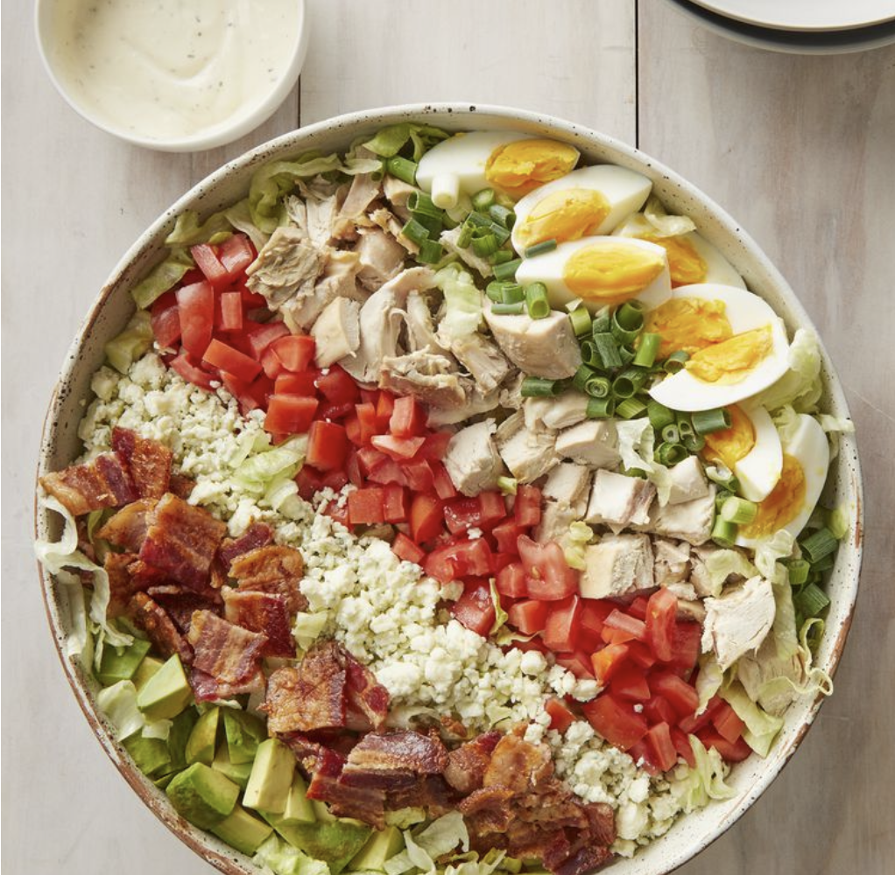

Cobb Salad
Main Page

Description:
Ingredients:
- 6 slices bacon
- 3 eggs
- 1 head iceberg lettuce, shredded
- 3 cups chopped, cooked chicken meat
- 2 tomatoes, seeded and chopped
- ¾ cup blue cheese, crumbled
- 3 green onions, chopped
- 1 avocado - peeled, pitted and diced
- 1 (8 ounce) bottle Ranch-style salad dressing
Steps
- Place eggs in a sauce pan with cold water, boil them, and let them cool for 10 to 12 minutes.
- Place beacon in a large skillet; cook it for 7-10 min; drain , cumble, and set aside.
- Divide shredded lettuce among individual plates. Top with rows of bacon, eggs, chicken, tomatoes, blue cheese, green onions, and avocado. Drizzle with dressing.
- Enjoy!!!